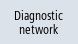

If network problems occur, you can record the data traffic as a log file for analysis and evaluation via the "Network Trace" window.
General information
-
The function is protected with the default password NETWORK
|
Note
|
|
Change the default password to prevent improper use.
|
-
The log is recorded via the tcpdump program (Linux) or the windump program (Windows).
Further information can be found at www.tcpdump.org
Requirement
Access level 2 (service) is required to change the password.
Procedure
|  | 1. | The "Network Status" window is open. |
| | 2. | Press the "Network trace" softkey. The "Set Password" window opens. |
 | 3. | Enter the password and press the "OK" softkey to confirm the entry. The "Network Trace" window opens. |
| | 4. | If you have stored parameters in a file, press the "From file" softkey, for example, to read in the file from a USB. The "Select File" window opens. |
| | 5. | Select the file from a directory and confirm with "OK". |
| | | - OR - |
| | 4. | If required, parameterize the recording conditions in the "Parameters (tcpdump)" input field. |
| | 5. | Press the "Start" softkey to record the log. Note: Recording stops automatically after 20 minutes. |
| | 6. | Press the "Stop" softkey to complete the recording. The "Export Trace File" window opens. |
| | 7. | Select a storage location, assign a file name and confirm with "OK". The trace file is moved to the storage location. With "Cancel", the log remains in the following directory: HMI data/Logs/Network trace/tcpdump.pcap or windump.pcap |
 | 8. | If the log already exists, press the "Export trace file" softkey to save the current log file, for example, on a USB storage medium. The "Select Storage Location" window opens. |
| | 9. | Select a storage location, assign a file name and confirm with "OK". |
Change password
| | 1. | The "Network Trace" window is open. |
| | 2. | Press the "Change password" softkey. The "Change Password" window opens. |
| | | Enter a new password and confirm with "OK". |